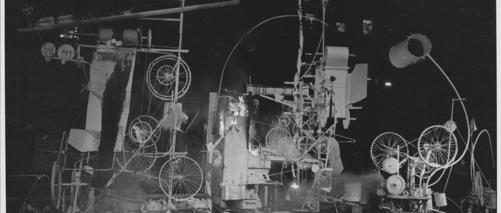
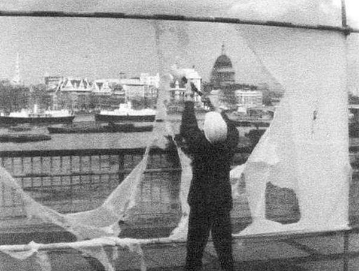

Pick a specific element of creatureness, find one or more examples of artificial creatures that express, illustrate or question this dimension. And then, imagine a creature of your own.
Tags
writing Artificial-
Creatures
Additionally
This course has its own website, featuring this assignment aswell.
Something I consider deeply human, is the ability to permanently alter our own bodies. Tattoo's, piercings, scarifications, implants, and more, give us an agency over our own bodies unlike anything else. Being able to make a choice that will realistically last forever, often without any other purpose than it being a decoration, is amazing and very significant to me.
Some of my examples are going to, in my opinion, stretch the definition of an artificial creature a bit. Unfortunately, this bodily agency is something a significant part of humans never takes themself up on, so it seems to be a lesser explored concept. Nonetheless, I do argue that the following are artificial creatures that were made to modify themself.
Additionally, the examples listed are generally described as destroying themself. While I think this is a fitting term by itself, within the context I'm presenting it I will use destruction synonymously with permanent modification. While I think reconstruction would be a better term in my context, I want to highlight the moments in which I, and many other people, have been told that decisions we make over our own bodies ruin us. Destruction by choice doesn't have to be harmful and is not ugly, and we creatures deserve pride, confidence, and comfort in our own modifications.
With that said, I present my first and most famous creature of permanent modification,
Love is in the Bin (2018) by Banksy
.
Halfway destroyed just after it got sold at an auction, I think its shock-value and prestige illustrate my views well. Did the modification make it increase or decrease in value? CAN we value something that has blemishes? Do you think it is dissapointed in itself for not being able to achieve total destruction? Was the error a conciouse choice of the creature?

Secondly, I present
Homage to New York, by Jean Tinguely
.
It consists of bicycle wheels, motors, metal drums, an old address labeling machine, a child’s go-cart, a piano, and an enameled bathtub, build to slowly self-destruct in front of an audience. Are each of its part aware how they contribute to the destruction? When taking a picture of it, what is the best time to capture the full piece? Is this work ever finished? Does the creature value the opion of the audience, who may wish against its self-destruction?

Lastly,
Gustav Metzger and his Auto-Destructive Art
,
especially his paintings of hydrochloric acid onto nylon. Made in public spaces, its acid slowly eats away its nylon, before being removed and discarded. Is this the creators or the creatures destruction? Are the nylon and acid part of the creature before they interact? Are the tears in the nylon part of it, and is the air that flows through them? Does the creature feel the same about its own distruction as it does about its removal and disposal?
When I imagine a creature based on body modifications, I think of something that is content, and better off, happier, or calmer, in its newer form. It's state is never complete, ever developing and living. It wants, and perhaps needs, elements that initially do hurt, for its own self-fulfillment.